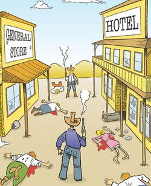
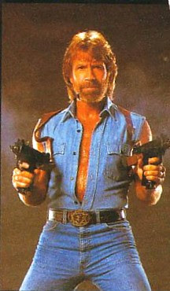

Friday, April 30, 2010
Well, the Good O' Boys Roundup has started up the barbeque again: Codrea, David Hardy and I are denounced by a racist, retired "Federale."
Typical of the ignorant breed. Saddest thing is this low-life existed off our tax dollars all his career. Thanks to David for the heads up.
Open Carry and scaring the straights.
Received this comment that seemed worthy of further discussion.
Do we really? Is it really in our interest to worry about whether we scare the straights or not?
Your thoughts, Irregulars.
Mike
III
Ed Rasimus has left a new comment on your post "What passes for critical thinking at the Wall Street Journal":
At issue isn't the protesting against the administration, but the prudence and wisdom of flaunting the firearms at Starbuck's and park gatherings. We shouldn't question the right to do it and we should always be aggressive in defense of the Second Amendment, but we have to recognize that there is the aspect noted in the WSJ which is that it gives the hoplophobes something to illustrate their meme about redneck, dangerous, militia types who are a social hazard.
We act against our interest when we do that.
Do we really? Is it really in our interest to worry about whether we scare the straights or not?
Your thoughts, Irregulars.
Mike
III
A little more discussion about "anarchists."
 Anarchist bombing of Wall Street, 1919.
Anarchist bombing of Wall Street, 1919.Anarchism is a political philosophy which considers the state undesirable, unnecessary and harmful, and instead promotes a stateless society, or anarchy. It seeks to diminish or even abolish authority in the conduct of human relations. Anarchists may widely disagree on what additional criteria are required in anarchism. The Oxford Companion to Philosophy says, "there is no single defining position that all anarchists hold, and those considered anarchists at best share a certain family resemblance."
There are many types and traditions of anarchism, not all of which are mutually exclusive. Strains of anarchism have been divided into the categories of social and individualist anarchism or similar dual classifications. Anarchism is often considered to be a radical left-wing ideology, and much of anarchist economics and anarchist legal philosophy reflect anti-statist interpretations of communism, collectivism, syndicalism or participatory economics. However, anarchism has always included an individualist strain supporting a market economy and private property, or morally unrestrained egoism. Still some individualist anarchists, like Pierre-Joseph Proudhon, were also socialists.
Others, such as panarchists and anarchists without adjectives, neither advocate nor object to any particular form of organization as long as it is not compulsory. Differing fundamentally, some anarchist schools of thought support anything from extreme individualism to complete collectivism. The central tendency of anarchism as a social movement has been represented by anarcho-communism, with individualist anarchism being primarily a philosophical or literary phenomenon. Some anarchists fundamentally oppose all forms of aggression, supporting self-defense or non-violence, while others have supported the use of some coercive measures, including violent revolution and terrorism, on the path to an anarchist society. -- Wikipedia.
Folks,
This comment below reminds me that I have been needing to have a few words on this subject:
Anonymous has left a new comment on your post "The Fort Knox Contretemps. . .":
Ramen,
Just because you are an enemy of my enemy doesn't make you a friend. Under normal circumstances you may well be my enemy, so therefore eventually, you will become my enemy once again. Anarchists have nothing in common with constitutionalists, patriots etc. The founders didn't want anarchy but limited, small government. A country where the rule of law was applied justly.
I fear the void left by the collapse of the current government filled by anarchist's is as dangerous as the continuation of the path to totalitarianism.
There are "anarchists" who assassinate politicians.
There are "anarchists" blow things up and kill innocents along with them.
There are "anarchists" who engage in street fights and break windows at the drop of a hat for just about any reason, or no reason at all.
Then there are anarchists who condemn violence in the service of anarchism as just as oppressive as state violence and who would only use violence in self-defense. For example see "You can't blow up a social relationship."

You can't blow up a social relationship. The total collapse of this society would provide no guarantee about what would replace it. Unless a majority of people had the ideas and organization sufficient for creation of an alternative society, we would see the old world reassert itself because it is what people would be used to, what they believed in, what existed unchallenged in their own personalities.
Proponents of terrorism and guerrilla-ism are to be opposed because their actions are vanguardist and authoritarian, because their ideas are wrong or unrelated to the results of their actions, because killing cannot be justified, and finally because their actions produce either repression with nothing in return or an authoritarian regime.
 Anarchist poster denouncing bombing as a tactic.
Anarchist poster denouncing bombing as a tactic.Then there are minarchists:
In civics, minarchism (sometimes called minimal statism, small government, or limited-government libertarianism. refers to a political ideology which maintains that the state's only legitimate function is the protection of individuals from aggression, theft, breach of contract and fraud. (Such states are sometimes called night watchman states.) Minarchists defend the existence of the state as a necessary evil, but assert that it may only act to protect the life, liberty, and property of each individual.
A minarchist state would therefore consist of very few branches/parts of government, in the most minimal way - such as, for an example, courts (but not necessarily). Generally, minarchists identify themselves within the broader propertarian libertarian movement.
Samuel Edward Konkin III, an agorist, coined the term in 1971 to describe libertarians who defend some form of compulsory government. Konkin invented the term minarchism because he initially felt dismayed of using the cumbersome phrase limited-government libertarianism. Some classical liberals, who believe in the necessity of the state, label themselves as minarchists to differentiate from market anarchists.
Contrastingly, market anarchists—who dismiss the legitimacy of all forms of compulsory government and advocate private law, private arbitration, and private defense—see the minimal state as an unnecessary evil on the grounds that it infringes on individual liberty by unnecessary taxation, wars, and police brutality. -- Wikipedia.
All this is the long way around to say that there are almost as many different kinds of "anarchists" as there are, well, anarchists.
Will Mama Liberty and other anarchists please chime in at this point? You explain yourselves better than I can.
Mike
III
What passes for critical thinking at the Wall Street Journal these days.
Which ain't much.
Yeah, right. That's why they're screaming about it. Latte "conservatives" give me gas more than latte "liberals" do.
Mike
III
Equally unimpressive were the armed types who gathered in a Virginia Park this month to demonstrate support for open carry and their opposition to government in general and the Obama administration in particular. Like the characters who now make a practice of wearing handguns into Starbucks and other places of business, such demonstrators may yet turn out to be a godsend for the antigun crowd.
Yeah, right. That's why they're screaming about it. Latte "conservatives" give me gas more than latte "liberals" do.
Mike
III
FBI up to their old tricks again.
"Hutaree" still means "stupid white man" in Shawnee," but what does "F.B.I." stand for? I draw your attention to this quote from the prosecutor:
The "BROTHERHOOD"? The "BROTHERHOOD?!?" It would seem that this is what this was all about, using the moronic Hutaree as useful idiots -- uniting all "law enforcement" and rallying them to the side of the Leviathan. And they can't even make their case at this early stage with a lower burden of proof?
Mike
III
Later, putting the transcript aside, the prosecutor said: "The theme is the brotherhood is the enemy - all law enforcement."
The "BROTHERHOOD"? The "BROTHERHOOD?!?" It would seem that this is what this was all about, using the moronic Hutaree as useful idiots -- uniting all "law enforcement" and rallying them to the side of the Leviathan. And they can't even make their case at this early stage with a lower burden of proof?
Mike
III
Judge asks feds to show militia did more than talk
Apr 28, 8:35 PM (ET)
By ED WHITE
DETROIT (AP) - A federal judge challenged prosecutors Wednesday to show that nine members of a Michigan militia accused of plotting war against the government had done more than just talk and should remain locked up.
U.S. District Judge Victoria Roberts heard nearly 10 hours of testimony and arguments over two days. She did not make a decision about whether the nine will remain in custody, saying only that a ruling would come soon.
The members of a southern Michigan group called Hutaree have been in custody for a month. An indictment accuses them of weapons violations and a rare crime: conspiring to commit sedition, or rebellion, against the government by first killing police officers.
Prosecutors say the public would be at risk if the nine are released. But defense lawyers claim the government has overreached with a criminal case based mostly on hateful speech.
An undercover agent infiltrated the group and secretly made recordings that have been played in court. While there is talk about killing police, it's not specific. In one conversation, there are many people talking over each other and laughing.
Roberts pressed that point more than once as Assistant U.S. Attorney Ronald Waterstreet argued in favor of keeping the nine in jail. The judge suggested she didn't hear or read in the transcripts any indication that violence was imminent.
"Mere presence where a crime may be planned is not a crime. ... How does this add up to seditious conspiracy?" Roberts said.
Waterstreet said the government is not required to show all its evidence at this early stage of the case. He referred to the words of militia leader David Stone, 44, of Clayton, Mich., who was recorded by the undercover agent while they drove to Kentucky earlier this year.
"It's now time to strike and take our nation back so that we may be free again from tyranny. Time is up," Waterstreet said, quoting a transcript.
Later, putting the transcript aside, the prosecutor said: "The theme is the brotherhood is the enemy - all law enforcement."
Defense lawyers urged the judge to look at each defendant individually. Although all are charged with conspiracy, they were not always together during critical meetings cited by the government.
"'What if' is not the standard. ... None of these words are an instruction to anyone to commit a crime," said Stone's attorney, William Swor, as held up a stack of transcripts.
Arthur Weiss, a lawyer for Thomas Piatek, 46, of Whiting, Ind., said disgust with the government as recorded by the undercover agent is similar to what's said daily by radio and TV talk-show hosts Rush Limbaugh, Glenn Beck and Sean Hannity.
"Millions of people" are talking about "taking our country back," Weiss said.
The judge also heard from relatives of some of the defendants who pledged to be responsible for them if they were released from jail.
Thursday, April 29, 2010
The Fort Knox Contretemps: “Army Preps for Tea Party 'Terrorists'.”

My thanks to many of you who forwarded me this link. In response, after consulting my many friends in places high and low, I wrote this email to MG James M. Milano, Commander of the United States Army Armor Center at Fort Knox.
-----Original Message-----
From: georgemason1776@aol.com
To: james.m.milano@us.army.mil
Cc: knox.pao@conus.army.mil; eric.c.schwartz@us.army.mil
Sent: Thu, Apr 29, 2010 10:39 pm
Subject: Pertinent questions raised by the Fort Knox exercise controversy that require your personal answer.
29 April 2010
MG James M. Milano
CDR, US Armor Center
Fort Knox
Via email: james.m.milano@us.army.mil
Dear General Milano,
You are no doubt by now well aware of the controversy ignited by Mark Alexander’s article “Army Preps for Tea Party 'Terrorists'.” Mr. Alexander updated his post this evening thusly:
Publisher's Note: Regarding my essay, Army Preps for Tea Party 'Terrorists,' I was contacted by senior command staff at Ft. Knox this week, but an officer in the security loop altered the scenario "in order to make it more realistic." Those alterations were described in my essay, exactly as they appeared. The command staff informed me that the alterations were not approved at the command level and that the individual who circulated the scenario through official channels will "receive appropriate counsel." I was assured that the Command staff would not have authorized such a scenario.
This response is all well and good, sir, but it does raise some issues and questions that should be answered, if not now in the court of public opinion then certainly later in front of Congress.
The over-arching concerns raised by this incident are, in order,
a. The politicization of US Army security exercise, targeting ‘US Persons’ and associated groups to which they belong, for constitutionally protected behavior (free speech, protest for redress of grievances; keeping and bearing arms; expression of political/ideological opinions).
b. The conflation of peaceful, constitutionally protected activity, with arguably militant but mis-characterized “violent” protest groups. (Muslim, Black-Nationalist, and left-progressive and anarchist groups, who do in fact commit violence, are seemingly never mentioned in these scenarios.)
c. The following concerns, excerpted from Alexander’s essay:
“amateurish in its construct …the fact that it made it out into official channels sets an ominous political precedent.”
“… the scenario "misrepresents freedom loving Americans as drunken, violent racists -- the opponents of Obama's policies have been made the enemy of the U.S. Army.”
“... equally concerned that it appears the command staff at Ft. Knox had signed off on this exercise.”
“One officer insisted, "The American people should require greater accountability of their commissioned officers, that they abide by their oath and never allow politically motivated propaganda like this exercise on any post or base again.”
Now if I may guess, and feel free to correct me if I am wrong, this was almost certainly a STAFFEX (Staff Exercise) or possibly a Command Post Exercise – although I doubt that. I very much doubt that this involved any actual ‘troop’ action. I would be very surprised if anyone, other than a few operations and training personnel, and security types were even aware of the exercise or participated. Such participation would have been limited to release of ‘scenario events’ (programmed from the Master Event Scenario List aka ‘MESL’; otherwise known as “MESLs”), acknowledgement by targeted recipients, with appropriate (fictional) responses. Actual dispatch of the QRF is not normally an actual part of such an exercise -- it tests and exercises systems, chains-of-command, and responsiveness of headquarters. As you know, occasionally these do go to the next level and involve actual units and troops.
That being the case, I must ask the following relevant questions:
1. To what level were soldiers and units participant in this exercise? Please specify at minimum the level of participation of the following named organizations: 5-15 CAV (read as “Fifth of the Fifteenth Cavalry Squadron”); 16th Cavalry Brigade; and 194th Cavalry Brigade (both of which are schools units – not operationally deployable maneuver brigades).
2: Were the field or operations command posts of the US Armor Center, US Army Garrison, Fort Knox; 16th Cav Bde (QRF I), 194th Cav Bde (QRF II), and 5-15 Cav Sqdn set up in field or simulated field conditions?
3: Which office (US Armor Center, G3 or US Army Garrison, Fort Knox, DPTMS) planned and developed the exercise? Who developed the scenario event items, specifically the characterization of the “threat” as a mixture of
· “White Supremacists [sic] Organizations”;
· “Local Militia Groups”;
· Anti-Government (Health-Care) Protestors;
· Tea Party
4: Who approved the scenario and the characterization of the “threat” as “armed”; with “combative training”; “some are former Military Snipers”; “Some may have explosives training/experience”; “Viable Threats have been made”; “Many members were extremely agitated at what they referred to as Government intervention and over taxation in their lives….”; “Some members have criminal records relating to explosive and weapons violations.”
5: Does Commander, Fort Knox (either one) consider it appropriate to conflate constitutionally protected speech and civic action seeking “a redress of grievances” (the Tea Party’s purpose and activity) with violent, criminal behavior? Does Commander, Fort Knox, have an opinion regarding the political characterization evident in the conflation of (presumably violent) “white supremacists” and “militia groups” – without appropriate differentiation regarding which type of group have actually been violent in recent political history? Specifically, what about left-leaning progressives and/or anarchists (SDS, etc.), militant environmentalists, or Aryan/Neo-NAZI collectivists – not constitutional militia who are defensive in nature or groups who protest the over-reach of government? Or, as Mark Alexander observes:
“Perhaps the author of the Ft. Knox scenario should focus on a response plan for, say, an Islamic terrorist who attacks unarmed troops on his own post. -- See Ft. Hood / Major Nidal Malik Hasan.”
6: As noted above, Mark Alexander, Publisher The Patriot Post who broke this story on Thursday, 29 April, published an update:
“I was contacted by senior command staff at Ft. Knox on the afternoon of the date of publication. There was a security exercise at Ft. Knox this week, but an officer in the security loop altered the scenario "in order to make it more realistic." Those alterations were described in my essay, exactly as they appeared. The command staff informed me that the alterations were not approved at the command level and that the individual who circulated the scenario through official channels will 'receive appropriate counsel.'”
That being the case, was the person or persons responsible for “altering the scenario” to “make it more realistic” actually disciplined; or is that merely a cover-up to appease concerned citizens questioning the propriety of this event? What was the nature of the discipline?
7: Will Fort Knox publish policy guidance preventing conflation of groups and/or individuals that participate in constitutionally protected behavior (speaking out for redress of grievances; protesting; keeping and bearing arms) as opposed to militant or criminal elements that have broken laws, communicated threats, attacked military installations?
8: Does Fort Knox gather intelligence or security information on US citizens and groups? As you know, gathering intelligence on ‘US Persons’ is a violation of public law and executive order whereas gathering and maintaining records on security threats is arguably not. Where does Fort Knox draw this line, and to what extent does the exercise as written and amended reflect or contradict that policy?
I await your response with great interest.
Mike Vanderboegh
PO Box 926
Pinson, AL 35126
GeorgeMason1776@aol.com
CC: Knox PAO: knox.pao@conus.army.mil; COL Eric Schwartz, CDR, US Army Garrison, Fort Knox; eric.c.schwartz@us.army.mil
Doctor's Report
Well they poked, prodded and carved dead tissue and told me flatly that with conventional treatment I have only a 30% chance of saving my left big toe. Instead, they are prescribing hyperbaric oxygen treatments (five times a week for six weeks to begin Monday). It all depends upon Blue Cross/Blue Shield's approval. And that-a is that-a.
Mike
III
Mike
III
Black-clad riot squad deployed to repel possible attack by little old lady Tea Partiers. I know I'm scared, aren't you? Sheesh.

My thanks to the several Threepers who forwarded the story below.
Who's the moke who ordered this bit of martial law display? Be sure and watch the video. It is a hoot.
Mike
III
Remember when somebody told you that there are no obsolete weapons, only obsolete tactics?
M40A2 Recoilless Rifle in RVN.
Qualifying for a deep bow of thanks and flourish of the boonie hat, Threeper Jeff sends this, with the comments:
I saw this and thought of you and Absolved. I wonder if someone's been reading your chapters online and getting ideas ;-) . . . Sorry I couldn't make it to the rally in DC, but I have to say you did a great job there! Here's hoping your feet are healing quickly!
Jeff
The video seems to show a stock M40A2 with fifty caliber spotting rifle on top. The Israelis have done an excellent job, I am told, with matching a state-of-the-art electronic sight to the weapon, doing away with the awkward (and dnagerous) spotting rifle arrangement. ("Here I am! Shoot me! Shoot me!")
There are some interesting comments about the 106 appended to the article.
Mike
III

Qualifying for a deep bow of thanks and flourish of the boonie hat, Threeper Jeff sends this, with the comments:
I saw this and thought of you and Absolved. I wonder if someone's been reading your chapters online and getting ideas ;-) . . . Sorry I couldn't make it to the rally in DC, but I have to say you did a great job there! Here's hoping your feet are healing quickly!
Jeff
Second Life For An Old Friend
By Boquisucio on April 28, 2010
Last time I saw footage of an 106mm Recoilless Rifle being employed by our forces, was in Beirut 1983. As I understand, the M40A2/A4 was taken out of service shortly thereafter, and tucked into to bed in places like Anniston Army Depot. Well, after a Rip Van Winkle like slumber of 25-years, our old trusted friend has been tapped for a wakey-wakey in our efforts in Afghanistan.
The clip below is purportedly from FOB Naray, and it shows Spec. Ops. Operators having some trigger-time with the beastie.
NOTE: Mildly Salty language is employed in this clip, and not appropriate to play in button-down environments.
The old trusty 106mm, will certainly be an asset in providing direct fire perimeter protection to the FOB. Besides, I am certain that Crane, holds in its vast climate-controlled system of bunkers, plenty of HEAT-T and APERS-T rounds to go around for many years to come.
Could any readers out there, provide input on how we are using the "Reckless" now a days?
Boq
The video seems to show a stock M40A2 with fifty caliber spotting rifle on top. The Israelis have done an excellent job, I am told, with matching a state-of-the-art electronic sight to the weapon, doing away with the awkward (and dnagerous) spotting rifle arrangement. ("Here I am! Shoot me! Shoot me!")
There are some interesting comments about the 106 appended to the article.
Mike
III
A little more reasoned argument, a little less name calling, if you please, Threepers.


'Nuff said? No circular firing squads. I've been a bit distracted lately and haven't had time to do a good job moderating. So please, I ask you, do a better job of self-moderating. Think before you call names.
I am going in today to have my feet evaluated for carving. If I'm admitted to the hospital, kindly play nice while I'm away.
MIKE
III
Wednesday, April 28, 2010
Two more reasons to re-elect nobody. (As if we needed any.)

"The Lexicon of Liberty" Bob Wright at Fort Hunt and Gravelly Point. Damn, but that boy can give a speech.

My thanks to Doc at Freedomizer Radio for this link to the first part of Bob Wright's Fort Hunt speech. Here's part two.
Here's his Gravelly Point speech. As far a speechmaking, Bob's got me beat by a country mile. Forward these far and wide.
Mike
III
Tuesday, April 27, 2010
Lindsay Grahamnesty folds.
Hearing the soft sounds of hangman's nooses being thrown over tree limbs in South Carolina by his own constituents, Graham tosses in the amnesty towel, for now anyway.
This doesn't mean Dear Leader won't try on his own. After all, they didn't need the South Carolina lamecock to pass "health care," now did they?
This doesn't mean Dear Leader won't try on his own. After all, they didn't need the South Carolina lamecock to pass "health care," now did they?
Smear job alert.
Julius Streicher in the dock at Nuremberg.
Folks, we're going to need somebody to capture a video snippet of this:

If he really said that, we can take it and shove it right back down his throat, figuratively speaking, of course. (Anything else comes after the victory in the Restoration War in the subsequent war crimes trials, with Potok playing the part of Julius Streicher.)
Nazi war criminal about to hang at Landsberg Prison, Germany, where Hitler wrote Mein Kampf. Evil comes full circle.

Folks, we're going to need somebody to capture a video snippet of this:
Potok proceeds to state that 'militias are the source for much of the criminal activity in America today.'

If he really said that, we can take it and shove it right back down his throat, figuratively speaking, of course. (Anything else comes after the victory in the Restoration War in the subsequent war crimes trials, with Potok playing the part of Julius Streicher.)
Nazi war criminal about to hang at Landsberg Prison, Germany, where Hitler wrote Mein Kampf. Evil comes full circle.

"Southern Poverty Law Center’s ‘Enemies List’ a Fantasy"
Southern Preposterous Lie Center's evil "patriot" fantasy. (I'm not sure which one of these guys I'm supposed to be. Maybe I'll call Heidi and ask.)
My thanks to Wretched Dog for forwarding this.

My thanks to Wretched Dog for forwarding this.
Southern Poverty Law Center’s ‘Enemies List’ a Fantasy
The Southern Poverty Law Center's new list of scary "Patriots" connects people as various as Alex Jones, Ron Paul, and Glenn Beck into a vast conspiracy. Robert Stacy "the Other" McCain tries — and fails — to make sense of it all.
April 26, 2010 - by Robert Stacy McCain
Catherine Bleish is a 26-year-old libertarian who was a Ron Paul delegate to the 2008 Republican National Convention. She is a leader of the Liberty Restoration Project which, among other things, opposes the federal “War on Drugs” and denounces the Patriot Act as “an assault against the civil liberties of Americans.”
Perhaps you disagree with those views, but is Bleish dangerous?
The Southern Poverty Law Center seems to think so. In a special report called “Meet the ‘Patriots’” issued last week, the SPLC named Bleish as one of 35 people “at the heart of the resurgent movement.” The report — which also names WorldNetDaily publisher Joseph Farah and Cliff Kincaid of Accuracy in Media — describes the movement thus:
“In the last year and a half, militias and the larger antigovernment ‘Patriot’ movement have exploded, accompanied by the rapid expansion of other sectors of the radical right. … [T]he so-called Patriots [are] people who generally believe that the federal government is an evil entity that is engaged in a secret conspiracy to impose martial law, herd those who resist into concentration camps, and force the United States into a socialistic ‘New World Order.’”
The SPLC’s scary references to militias and conspiracies and a “resurgent movement” very much echo Bill Clinton’s recent conflation of the tea party with Timothy McVeigh and, like Clinton, the Montgomery, Ala.-based organization singled out Rep. Michelle Bachmann, calling her an “enabler” of the Patriot movement. Also labeled “enablers” by the SPLC were Glenn Beck and Andrew Napolitano of Fox News, as well as Ron Paul, the Texas congressman whose quixotic 2008 presidential campaign helped turn Bleish into a full-time political activist.
A graduate of the University of Missouri who majored in communications, Bleish says she has postponed her graduate studies — she aims to get a master’s degree in political science — to become involved in a variety of libertarian projects. She participated in the July 2008 “Revolution March” of Paul supporters in Washington, D.C., and attended a May 2009 conference in Jekyll Island, Ga., that also included several others named in the SPLC “Patriot” report. The SPLC says that “seminal” meeting — organized by libertarian activist Bob Schulz — “helped lay the groundwork for the resurgence of the [Patriot] movement.”
Bleish says she’s not sure why the SPLC — which typically monitors hate groups like the KKK and the Aryan Nations — is now targeting libertarians like herself.
“They’re indirectly associating people who aren’t violent and aren’t racist with violence and racism, and that’s unfortunate,” Bleish said in a telephone interview.
If Bleish is considered a “conspiracy theorist,” that’s probably because of her group “Operation: De-Fuse,” which depicts the Department of Homeland Security as part of a “police/surveillance state” that is “militarizing and federalizing our police forces.”
Bleish and others say that this isn’t conspiracy theory, but conspiracy reality. The name of Operation: De-Fuse is a reference the DHS “fusion centers” such as the Missouri Information Analysis Center, which issued a controversial 2009 report identifying Ron Paul supporters and pro-life activists (as well as fans of Rambo movies and Tom Clancy novels) as potential terrorists.
“Militia members most commonly associate with 3rd party political groups,” the MIAC report said. “It is not uncommon for militia members to display Constitutional Party, Campaign for Liberty or Libertarian material.”
If DHS is identifying third-party political movements as threats, is it irrational for supporters of those movements to consider the DHS a threat?
Regardless of the legitimacy of Bleish’s concerns about DHS, however, the SPLC report is at least correct in portraying Bleish as part of a “movement.” Looking over the “Patriot” report, Bleish identified about a dozen names on the list — including Chuck Baldwin of the Constitution Party — as people she’s communicated with or met at various events. But some of the names on the SPLC’s list call to mind the lyrics of an old Sesame Street song: “One of these things is not like the others.”
Why, for example, does the SPLC list that includes 9/11 “Truther” Alex Jones also name Kincaid, whose Accuracy in Media is a well-established conservative organization devoted to identifying media bias? In fact, Kincaid denounced the 9/11 “inside job” conspiracy theory as “absurd” in a recent column warning that Jones is “playing a destructive role” that could discredit the tea party movement.
Jones and Kincaid are clearly not part of the same “movement,” and there is no connection between Kincaid and libertarians like Bleish, except for their all being named in the same SPLC report. The same is true for Farah, a veteran conservative journalist whom the SPLC report called “a leading fomenter of the baseless claim that President Obama was not born in Hawaii, but in Africa” — an accusation Farah flatly denies.
“[T]hough I have spoken and written hundreds of thousands of words about Barack Obama’s failure to prove his eligibility, I have never said or written that he ‘was not born in Hawaii, but in Africa,’” Farah wrote in his column last week. “What I have said is ever so simple: Obama has not proven he was born in the United States and is a natural born citizen.”
Critics may dispute Farah’s argument, but that argument doesn’t make him a member of the same “movement” as Bleish, Jones and others named in the SPLC report, such as militia activist Mark Koernke and anti-tax radical Red Beckman. However, Farah proudly endorsed those whom the SPLC labeled Patriot “enablers.”
“I’m joined by some good company [on the SPLC list] — my buddy Rep. Michele Bachmann, whom I would support for president tomorrow, Glenn Beck, Judge Andrew Napolitano, Rep. Paul Broun and Rep. Ron Paul,” Farah wrote in his column.
How do these “enablers” fit into the movement that the SPLC is concerned about?
“One reason the resurgent antigovernment ‘Patriot’ movement is taking off so quickly is the support for many of its central ideas that comes from ostensibly mainstream figures in politics and the media,” the report says. “These men and women have helped to put key Patriot themes — the idea that President Obama is a Marxist, that he and other elites in the government are pushing a socialist takeover, that the United States plans secret concentration camps and so on — before millions of Americans, many of whom actually believe these completely false allegations.”
The federal government took over General Motors, “invested” billions of taxpayer dollars in Wall Street financial firms, and recently passed legislation to expand government control over the nation’s health-care system, but concerns about a “socialist takeover” are “completely false allegations”?
If you’re tempted to ask a question like that, you must be a dangerous kook, too. Don’t worry, though — as Farah says, you’re in good company. Over the years, the SPLC has steadily expanded its list of “far-right” menaces to include mainstream conservatives — the American Enterprise Institute, David Horowitz, the Bradley Foundation and Dinesh D’Souza, among others — and as National Review’s Mark Krikorian recently noted, the SPLC accused his Center for Immigration Studies of “spreading bigotry.”
So what about this grab-bag of names on the SPLC’s “Patriot” list? Is it really possible that a single “movement” could include Joseph Farah, Michelle Bachmann, Cliff Kincaid and Alex Jones? Andrew Napolitano, Glenn Beck, Ron Paul and Red Beckman? I put that question to SPLC director of research Heidi Beirich.
“I think our definition of what a ‘Patriot’ group is is very clear. And all these folks, to my mind, fall within that definition,” said Beirich, a Ph.D. in political science from Purdue University who has been with the SPLC since 1999. “It may not seem that way to you, but from my perspective and given our definition, I’m actually surprised that you would ask me this question. The connections are crystal clear.”
Connections between people who’ve never met — some of whom vehemently disagree with each other — are “crystal clear”? Sounds kind of like a “secret conspiracy.” But only dangerous kooks believe in that stuff.
Robert Stacy McCain is co-author (with Lynn Vincent) of Donkey Cons: Sex, Crime, and Corruption in the Democratic Party . A frequent contributor to the American Spectator, he blogs at The Other McCain.
This is not a Chuck Norris joke. . . but it could be. No, actually, on second thought, it is.


Folks,
You've all heard Chuck Norris jokes, right?
Like:
Leading hand sanitizers claim they can kill 99.9 percent of germs. Chuck Norris can kill 100 percent of whatever he wants.
Chuck Norris' tears cure cancer. Too bad he has never cried.
Chuck Norris counted to infinity - twice.
Chuck Norris was originally cast as the main character in 24, but was replaced by the producers when he managed to kill every terrorist and save the day in 12 minutes and 37 seconds.
Chuck Norris can speak braille.
Chuck Norris does not sleep. He waits.
Chuck Norris owns the greatest Poker Face of all-time. It helped him win the 1983 World Series of Poker despite him holding just a Joker, a Get out of Jail Free Monopoly card, a 2 of clubs, 7 of spades and a green #4 card from the game Uno.
When the Boogeyman goes to sleep every night he checks his closet for Chuck Norris.
Once a cobra bit Chuck Norris' leg. After five days of excruciating pain, the cobra died.
Chuck Norris does not hunt because the word hunting implies the possibility of failure. Chuck Norris goes killing.
Chuck Norris doesn't read books. He stares them down until he gets the information he wants.
Ghosts are actually caused by Chuck Norris killing people faster than Death can process them.
Chuck Norris can strangle you with a cordless phone.
Chuck Norris can create a rock so heavy that even he can't lift it. And then he lifts it anyways, just to show you who Chuck Norris is.
If you can see Chuck Norris, he can see you. If you can't see Chuck Norris you may be only seconds away from death.
So, somebody sent me this breathless Chuck Norris advertisement for the NRA. In it, Norris hyper-ventilates:
Right now, Washington is scheming and scamming to erode and then erase the Second Amendment from our Constitution. And it will accomplish it through the signing of international treaties on gun control, bypassing the normal legislative process in Congress, tightening regulations upon firearm and ammunition manufacturers, using the anti-gun financing of tycoons and ultimately confiscating all firearms under the guise of terrorism patrol and enforcement. Without public debate and cloaked in secrecy, gun control covertly will come upon us like a thief in the night. One day, we will wake up to discover that the U.S. has signed a global treaty that will prohibit any transfer of firearm ownership, force reductions in the number of firearms privately owned and eventually eradicate the planet of guns for law-abiding citizens. Of course, the criminals still will have their guns illegally. And on that day, if you do not comply with that global treaty, you will be fined and face imprisonment. This is not a fictitious story or false warning. As sure as government health care has been shoved down our throats, so will the barrels of our guns. And left with little defense, we will go as lambs to the slaughter.
Lions! And tigers! And bears! Oh, my!
Of course the solution to this "lambs to the slaughter" is the Judas-goat NRA, apparently.
Look, guys and gals, I PRAY that the domestic enemies of the Constitution and the Founders' Republic try this. I long for the day when they call on foreign troops as "peacekeepers" to our soil. I dream of the day that all these supposed FEMA camps go into operation.
FOR THAT WILL BE THE DAY OF THE BEGINNING OF THE END OF THEIR REVOLUTION AGAINST THE FOUNDERS' REPUBLIC.
Chuck Norris?
Sheesh, what a wimp.
Mike
III
To he who shall remain anonymous.

We're "embarrassing Caucasians in this country," or so says Ed Schultz.
Thanks to Daniel Almond for this link. Why do these pukes always make it about race?
Monday, April 26, 2010
All RIGHT! Now THAT'S what I'm talkin' about! "They want everything. They don't want any controls whatsoever." You damn betcha!

A sincere tip of the boonie hat to Threeper Dan for forwarding this.
Maine may have two RINO senators, but they don't lack for free Americans who know how to make a statement.
Gun advocates wear holstered weapons and bring machine gun to rally in Maine park
By David Sharp - Associated Press
Published: 04/26/10 at 6:31 PM
PORTLAND, Maine (AP) ― About 75 gun rights supporters — most of them wearing side arms — gathered in a public park to exercise their Second Amendment rights Sunday, enjoying hamburgers and hot dogs as joggers trotted by and a small group of demonstrators gathered nearby.
Shane Belanger, a University of Southern Maine student who organized the display of guns, which included a machine gun mounted on a jeep, said the aim wasn't to frighten anyone. Instead, he said, the goal was simply to show that people have a constitutional right to bear arms.
"A right unexercised is a right lost," Belanger said as the gas grill warmed up on a sunny afternoon. "We're law-abiding citizens, just having a barbecue."
Dave Nelson, of Gorham, brought his restored olive drab 1951 Willys jeep with an operable .30-caliber machine gun mounted in the back and a box of ammunition. He said he doesn't like what's happening in the country when it comes to work ethic and government intrusion into people's lives.
"Things are changing drastically," said Nelson, who wore a 9 mm handgun in a holster. "The government owns too many things. It's trying to control people."
Some critics were incredulous.
"Where does it stop? You're carrying a .38 on your hip. The next one's carrying .45," said Marine veteran Walter McKertich, 73, of Portland. "If I get a 105 Howitzer, is that OK? They want everything. They don't want any controls whatsoever."
Another veteran, Norm Rasulis, of Peaks Island, joined the group protesting the display of guns.
"I've seen no reason to carry (a handgun) since I left the service," he said.
Maine has fairly liberal gun laws, and the Legislature doesn't let municipalities regulate guns. Nonetheless Dan Skolnik, chairman of the City Council Public Safety Committee, said he'd like to see the city have the right to require permits for people to display their guns in public.
"Anywhere in the country, cities and towns ought to be able to regulate when people are walking around with a loaded weapon," Skolnik said.
The gathering in Portland, the state's largest city, is the latest in a series of such open carry events nationwide.
For the most part, police kept the two groups apart. A few people discussed their differences, and the chats were generally civil.
Belanger, the student organizer, didn't wear a gun. Neither did Peter Keef, another gun rights supporter. They said they were happy to have both sides air their views.
"I'm glad that they have the right to do that," said Keef, of Casco, motioning to the counter-demonstrators. "I'm glad we live in a country where that's possible."
Glen Beck's Nonviolence Pledge.

Can somebody tell this schmuck about the Deacons for Defense and Justice?
Pledge of Nonviolence
April 23, 2010 - 5:16 ET
Below is the Pledge of Nonviolence that Martin Luther King, Jr. asked those who believed in his message to abide by as well as his core principles of nonviolence.
I am going to ask you to make the same commitment to nonviolence and give you the opportunity to make that pledge public by having you ‘sign’ these documents below.
-glenn
Pledge of Nonviolence
1. As you prepare to march meditate on the life and teachings of Jesus
2. Remember the nonviolent movement seeks justice and reconciliation - not victory.
3. Walk and talk in the manner of love; for God is love.
4. Pray daily to be used by God that all men and women might be free.
5. Sacrifice personal wishes that all might be free.
6. Observe with friend and foes the ordinary rules of courtesy.
7. Perform regular service for others and the world.
8. Refrain from violence of fist, tongue and heart.
9. Strive to be in good spiritual and bodily health.
10. Follow the directions of the movement leaders and of the captains on demonstrations.
The Five Principles of Nonviolence
1. Non-violent resistance is not a method for cowards. It does resist. The nonviolent resister is just as strongly opposed to the evil against which he protests, as is the person who uses violence. His method is passive or nonaggressive in the sense that he is not physically aggressive toward his opponent, but his mind and emotions are always active, constantly seeking to persuade the opponent that he is mistaken. This method is passive physically but strongly active spiritually; it is nonaggressive physically but dynamically aggressive spiritually.
2. Nonviolent resistance does not seek to defeat or humiliate the opponent, but to win his friendship and understanding. The nonviolent resister must often express his protest through noncooperation but he realizes that noncooperation is not the ends itself; it is merely means to awaken a sense of moral shame in the opponent.
3. The attack is directed against forces of evil rather than against persons who are caught in those forces. It is a struggle between justice and injustice, between the forces of light and the forces of darkness.
4. Nonviolent resistance avoids not only external physical violence, but also internal violence of spirit. At the center of non-violence stands the principle of love.
5. Nonviolence is based on the conviction that the universe is on the side of justice. It is the deep faith in the future that allows a nonviolent resister to accept suffering without retaliation. The nonviolent resister knows that in his struggle for justice, he has a cosmic companionship.

"Agents of Incompetence" -- the continuing saga of stupidity that is the ATF.
Now that things are slowing down a bit, I'll have more time to devote to James P. "Little Jimmy" Vann and his bumbling "agents of incompetence" enforcing their unconstitutional agenda.
Check this link:
http://pajamasmedia.com/blog/agents-of-incompetence-atf-dodges-foia-still-has-seized-bb-guns-part-iv/?singlepage=true
Check this link:
http://pajamasmedia.com/blog/agents-of-incompetence-atf-dodges-foia-still-has-seized-bb-guns-part-iv/?singlepage=true
"They stood up like men." Robert Hicks, a leader of the Deacons for Defense and Justice, has passed away.
Robert Hicks in 1965, the year of a sit-in by blacks at a cafe in Bogalusa, La., where he lived. (NYT)
David Codrea emailed me the sad news with a link to his obit here. The New York Times obituary:
Every Three Percenter should read this book.

David Codrea emailed me the sad news with a link to his obit here. The New York Times obituary:
Robert Hicks, Leader in Armed Rights Group, Dies at 81
By DOUGLAS MARTIN
Published: April 24, 2010
Someone had called to say the Ku Klux Klan was coming to bomb Robert Hicks’s house. The police said there was nothing they could do. It was the night of Feb. 1, 1965, in Bogalusa, La.
The Klan was furious that Mr. Hicks, a black paper mill worker, was putting up two white civil rights workers in his home. It was just six months after three young civil rights workers had been murdered in Philadelphia, Miss.
Mr. Hicks and his wife, Valeria, made some phone calls. They found neighbors to take in their children, and they reached out to friends for protection. Soon, armed black men materialized. Nothing happened.
Less than three weeks later, the leaders of a secretive, paramilitary organization of blacks called the Deacons for Defense and Justice visited Bogalusa. It had been formed in Jonesboro, La., in 1964 mainly to protect unarmed civil rights demonstrators from the Klan. After listening to the Deacons, Mr. Hicks took the lead in forming a Bogalusa chapter, recruiting many of the men who had gone to his house to protect his family and guests.
Mr. Hicks died of cancer at his home in Bogalusa on April 13 at the age of 81, his wife said. He was one of the last surviving Deacon leaders.
But his role in the civil rights movement went beyond armed defense in a corner of the Jim Crow South. He led daily protests month after month in Bogalusa — then a town of 23,000, of whom 9,000 were black — to demand rights guaranteed by the 1964 Civil Rights Act. And he filed suits that integrated schools and businesses, reformed hiring practices at the mill and put the local police under a federal judge’s control.
It was his leadership role with the Deacons that drew widest note, however. The Deacons, who grew to have chapters in more than two dozen Southern communities, veered sharply from the nonviolence preached by the Rev. Dr. Martin Luther King Jr. They carried guns, with the mission to protect against white aggression, citing the Second Amendment.
And they used them. A Bogalusa Deacon pulled a pistol in broad daylight during a protest march in 1965 and put two bullets into a white man who had attacked him with his fists. The man survived. A month earlier, the first black deputy sheriff in the county had been assassinated by whites.
When James Farmer, national director of the human rights group the Congress of Racial Equality, joined protests in Bogalusa, one of the most virulent Klan redoubts, armed Deacons provided security.
Dr. King publicly denounced the Deacons’ “aggressive violence.” And Mr. Farmer, in an interview with Ebony magazine in 1965, said that some people likened the Deacons to the K.K.K. But Mr. Farmer also pointed out that the Deacons did not lynch people or burn down houses. In a 1965 interview with The New York Times Magazine, he spoke of CORE and the Deacons as “a partnership of brothers.”
The Deacons’ turf was hardscrabble Southern towns where Klansmen and law officers aligned against civil rights campaigners. “The Klan did not like being shot at,” said Lance Hill, author of “The Deacons for Defense: Armed Resistance and the Civil Rights Movement”(2004).
In July 1965, escalating hostilities between the Deacons and the Klan in Bogalusa provoked the federal government to use Reconstruction-era laws to order local police departments to protect civil rights workers. It was the first time the laws were used in the modern civil rights era, Mr. Hill said.
Adam Fairclough, in his book “Race and Democracy: The Civil Rights Struggle in Louisiana, 1915-1972” (1995), wrote that Bogalusa became “a major test of the federal government’s determination to put muscle into the Civil Rights Act in the teeth of violent resistance from recalcitrant whites.”
Mr. Hicks was repeatedly jailed for protesting. He watched as his 15-year-old son was bitten by a police dog. The Klan displayed a coffin with his name on it beside a burning cross. He persisted, his wife said, for one reason: “It was something that needed to be done.”
Robert Hicks was born in Mississippi on Feb. 20, 1929. His father, Quitman, drove oxen to harvest trees for the paper mill. He played football on a state championship high school team and later for the semi-professional Bogalusa Bushmen.
He was known for his generosity: at the Baptist congregation where he was a deacon, he bought new suits for poor members. As the first black supervisor at the mill, he helped a young man amass enough overtime to buy the big car he dreamed of. Children all over town called him Dad, his son Charles said.
A leader in the local N.A.A.C.P. and his segregated union, Mr. Hicks was the logical choice to head the Bogalusa Civic and Voters League when it was formed to lead the local civil rights effort. He was first president, then vice president of the Deacons in Bogalusa.
Besides Valeria Hicks, his wife of 62 years, and his son Charles, Mr. Hicks is survived by three other sons, Gregory, Robert Lawrence and Darryl; his daughter, Barbara Hicks Collins; and many grandchildren and great-grandchildren.
By 1968, the Deacons had pretty much vanished. In time they were “hardly a footnote in most books on the civil rights movement,” Mr. Hill said. He attributed this to a “mythology” that the rights movement was always nonviolent.
Mrs. Hicks said she was glad it was not.
“I became very proud of black men,” she said. “They didn’t bow down and scratch their heads. They stood up like men.”
Every Three Percenter should read this book.

Sunday, April 25, 2010
Bill Clinton, the OKC Boogyman and the other boogymen who really haunt his sleep.

The bogeyman (also spelled boogyman, bogyman, boogieman, boogey monster) is a legendary ghost-like monster. The bogeyman has no specific appearance and conceptions of the monster can vary drastically even from household to household within the same community; in many cases, he simply has no set appearance in the mind of a child, but is just an amorphous embodiment of terror. Bogeyman can be used metaphorically to denote a person or thing of which someone has an irrational fear. Parents often say that if their child is naughty, the bogeyman will get them, in an effort to make them behave. -- Wikipedia.
It began with this announcement, sent out only three days before the event:
ADVISORY: President Bill Clinton Discusses the Tragedy of Oklahoma City: 15 Years Later and the Lessons for Today
April 13, 2010
Contact: Anna Soellner
Phone: 202.682.1611
Email: asoellner@americanprogressaction.org
Friday, April 16, 2010, 9:30am – 12:30pm
WASHINGTON, D.C.—The Center for American Progress Action Fund and the Democratic Leadership Council will hold a symposium commemorating the 15th anniversary of the Oklahoma City Bombing.
Opening the symposium will be a keynote speech by former President Bill Clinton who will discuss Oklahoma City and its aftermath. Following the speech will be a panel discussion with experts who will discuss Oklahoma City, how the country reacted to it, and what lessons we can lean from it today about our political discourse.
For members of the press, please RSVP to Anna Soellner at asoellner@americanprogressaction.org.
Space is extremely limited. RSVP required.
What: Symposium Commemorating the 15th Anniversary of the Oklahoma City Bombing
When: Friday, April 16th at 9:30am EST
Who:
Introductory Remarks:
Al From, Founder, Democratic Leadership Council
John Podesta, President and Chief Executive Officer, Center for American Progress Action Fund
Keynote Address:
President Bill Clinton
Featured Panelists:
Congressman Kendrick Meek, (D-FL)
Former Congressman Mickey Edwards, (R-OK)
Bradley Buckles, former director, Bureau of Alcohol, Tobacco and Firearms
Mark Potok, Director, Intelligence Project, Southern Poverty Law Center
Michael Waldman, Executive Director, Brennan Center for Justice
Moderated by: Ron Brownstein, National Journal
Where: Center for American Progress Action Fund 1333 H St. NW, 10th Floor Washington, DC 20005
Now this is quite a rogue's gallery. Not only do we have the Southern Preposterous Lie Center's Mark "the Montgomery Castrato" Potok, Michael Waldman, former speechwriter for Bill Clinton, and Bradley Buckles, cover-up artist extraordinaire of the ATF, first with the Chief Counsel's Office and later as Director (endorsed by both Bushies and Clintonistas) but they added on, apparently at the last minute, Jamie "The Wall" Gorelick, the principal cover-up queen of Clinton Main Justice, and arguably one good reason why U.S. intelligence did not intercept the 9-11 attacks (of course she was later appointed to the commission investigating herself).
You will note that they are not interested in dissenting voices here. This was about projecting a meme.
And what is the Center for American Progress, you might ask?
The Center for American Progress is a liberal public policy research and advocacy organization. Its website describes it as "... a nonpartisan research and educational institute dedicated to promoting a strong, just and free America that ensures opportunity for all." It has its headquarters in Washington D.C.
Its President and Chief Executive Officer is John Podesta, who served as chief of staff to then U.S. President Bill Clinton. Located in Washington, D.C., the Center for American Progress has a campus outreach group, Campus Progress, and a sister advocacy organization, the Center for American Progress Action Fund. Citing Podesta's influence in the formation of the Obama Administration, a November 2008 article in Time stated that "not since the Heritage Foundation helped guide Ronald Reagan's transition in 1981 has a single outside group held so much sway."
History and mission
The Center for American Progress was created in 2003 as a left-wing alternative to think tanks such as the Heritage Foundation and the American Enterprise Institute.
Since its inception, the Center has gathered a group of high-profile senior fellows, including Lawrence Korb, Assistant Secretary of Defense under President Ronald Reagan; Gene Sperling, Director of the National Economic Council under President Bill Clinton; Ruy Teixeira, political scientist and author of The Emerging Democratic Majority; and, most recently, former Senate Minority Leader Tom Daschle and Elizabeth Edwards, wife of former Presidential candidate Sen. John Edwards. . .
The Center has no information on its website about its funding, but the Washington Post reported that "seed money pledged by such deep-pocketed Democrats as financier George Soros (and mortgage billionaires Herbert and Marion Sandler)" assisted its formation. The authors of Her Way, a biography of Hillary Clinton, also assert that the Democracy Alliance, a progressive donors collective, has funded the Center. They also assert that the Sandlers and Soros provided seed money. -- Wikipedia.
CAP is also hardwired into the Obama White House. Thus this dog-and-pony show, apparently put on in great haste and not a little expense of George Soros' money, was certainly done for what the enemies of the Founders' Republic consider a very good reason.
Here is the serial perjurer and rapist's conflationary screed.
And it wasn't just the CAP show that they used to get the message out. Billy Jeff did a column for the New York Times and gave high-profile interviews to ABC and CNN, among others.
I shall not dissect the many errors and outright lies in this attack on facts and logic, but allow me to summarize:
The criticisms of the GOP, Rush Limbaugh, and Glen Beck, plus the activism of the Tea Parties, will lead to the terrorism of another Oklahoma City bombing as carried out by "the lone bomber," everyone's favorite boogyman, Timothy McVeigh.
Clinton's NYT column is entitled "What We Learned in Oklahoma City." It would have been more revealing if he had written on the subject "What We Learned in Oklahoma City -- and did our damnedest to keep you from finding out."
Timothy McVeigh, the "Lone Bomber."

Okay, will everyone who believes that Timothy McVeigh was the "lone bomber" who accomplished the mass murder of 167 Americans, please raise their hand?
A few facts that have slipped out that Bill Clinton won't tell you:
Andreas Carl Strassmeir.

On 5 April 1995, moments after renting the Ryder truck used in the bombing, Timothy McVeigh, using the "Darryl Bridges" phone card, called a man named Andreas Carl Strassmeir at Elohim City, a "Christian" Identity compound in the sticks of eastern Oklahoma that served as the base for the Aryan Republican Army terror cell (also known as the "Midwestern Bank Bandits'). At the time, Strassmeir was "chief of security" at Elohim City. His roommate was Michael Brescia, former Philadelphia choirboy and a member of the ARA.
Strassmeir wasn't just any German tourist with a penchant for anti-Semitic rural life. As Oklahoma journalist J.D. Cash reported in a series of stories in the McCurtain Gazette in 1996 and 1997:
"Andy the German's" father is Guenter Strassmeir, and experienced politician who escaped from communist-occupied East Germany after World War II and made his way to the top rungs of West Germany's mainstream Christian Democratic Union political party.
Recently retired from official posts, the elder Strassmeir served 23 years in the parliament, but is best remembered as the architect of the reunification of the divided Germanies. It was a tedious and historic process he oversaw while serving as Parliamentary Secretary of State to the Chancellor in Berlin.
Another well-known member of the family is Andreas' younger brother, Alexander, who currently serves as a representative on Berlin's elected council.
A trained Panzergrenadier intelligence officer, Strassmeir began paying visits to the U.S. while still in the Bundeswehr. He was sponsored by a man named Vincent Petruskie, an Air Force Colonel and CIA operative. It was evident from the beginning that Strassmeir had an invisible force field around him.
In February of 1992, state troopers set up a roadblock near the entrance to Elohim City. The purpose was to check for required documents such as driver's licenses, tags and proofs of insurance. Strassmeir was among those stopped.
Interviewed later, one of the troopers said Strassmeir fooled him.
"There were two men in the vehicle. The driver as it turns out was Strassmeir, but he gave his buddy's name, Pete Ward. And that is how I wrote him up."
Cited for not displaying an Oklahoma tag, and failing to carry a valid driver's license, the ticket indicates it was issued to Peter Nelson Leslie Ward, with a date of birth, 2/18/68. But Ward's Oklahoma driver's license shows his date of birth as 12/30/68.
Another tell-tale clue of the apparent forgery is reflected on the signature line of the citation where "Jr." preceded Ward.
While Strassmeir was apparently able to fool the troopers as to his true identity for a time, still his car was impounded pending a resolution of the charges. And inside the vehicle was a briefcase that had caught the trooper's attention.
Wrecker driver Kenny Pence of Muldrow remembers the event vividly.
"That guy was some kind of weird cookie," said Pence. "I tell ya... the next day-- after I locked his car up in my yard-- I started gettin' calls from all over the place."
Pence recounted the series of events. "Some high-powered lawyer in Houston called. Some general or major or somethin' in the Carolinas called. The district office for the Highway Patrol called. And then someone at the State Department called."
It seemed that whoever owned the faded red '83 Chevrolet wagon was important.
"You bet," said Pence. "Everyone was telling me to turn that car back and give those papers back to that boy and don't charge him nothin'. They all kept telling me this was one big boo-boo. And the guy at the State Department said this boy had immunity or something. You know, he was some kinda diplomat."
"That general in the Carolinas wanted to know about the briefcase. Heck, you know... those troopers inventoried all of it... but those folks were sure worried about what was in there."
Pence added sardonically, "Man I couldn't get that car out of here fast enough. And when that nut showed up to pick up his car, he got real upset when he saw that the briefcase had been gone through. He settled down in a while and said, 'Well, no one will be able to understand what these are anyway.'"
The real Pete Ward, by the way, was another member of the ARA.
Carol Howe

In February 1995, pursuant to intelligence gathered by a confidential informant, Carol Howe, the Tulsa office of the ATF was planning a raid on Elohium City to arrest Strassmeir. Howe had reported that Strassmeir had led reconnaissance missions to Oklahoma City to scout federal buildings as bomb targets. Before the ATF could act, in late February, in meeting including Bob Ricks, FBI SAC of Oklahoma City, the gun cops were told to back off because, in the words quoted by one meeting participant to J.D. Cash, "Elohim City is OUR operation."
After the bombing, when press attention began to focus on Strassmeir, thanks to the work of J.D. Cash and others, Strassmeir was smuggled out of the country by neoNazi attorney and FBI informant Kirk Lyons. The FBI investigation studiously avoided Elohim City, the ARA, and especially Andreas Carl Strassmeir. This was done mostly at the direction of Jamie Gorelick.
In late 1995, I was pushed into the private investigation of the OKC bombing when a member of the Alabama Department of Public Safety gave me Strassmeir's driver's license and social security number provided him by Vincent Petruskie, as well as "Andy the German's" post-bomb itinerary. I contacted Glenn and Kathy Wilburn, who had lost two grandchildren in the bombing, Chase and Colton Smith, ages 3 and 2, and through the Wilburns, J.D. Cash.
 Chase and Colton Smith, murdered at their day care in the Alfred P. Murrah Federal Building, 19 April 1995.
Chase and Colton Smith, murdered at their day care in the Alfred P. Murrah Federal Building, 19 April 1995.It is my understanding that an FBI source told an Associated Press reporter that the OKC bomb was certainly built at Elohim City, not at Geary Lake as the Feds claimed in the McVeigh and Nichols trials.
One surviving member of the ARA, Pete Langan, is being held on a life sentence and zealously guarded by the Bureau of Prisons from any press contact. Not even Dan Rather and 60 minutes could penetrate the iron curtain around Langan.
After more than a decade of diligent digging and sifting, J.D. Cash believed that the OKC bombing was carried out by the ARA -- of which McVeigh was a member -- as part of a larger federal sting operation to break the links between the American and German neoNazi movements and to collapse the individual organizational elements of the racist right collectivists in this country. It was a massive sting operation that got away from the FBI, J.D. believed. As a result, 167 Americans, men, women and little children, died. If so, Bill Clinton has their blood on his hands, as well as that of the 80 Davidians at Waco. Chase Smith would be 18 this month. Colton would be 17.
Although J.D. Cash has passed away, his research was preserved and his work is being carried out by LTC Roger Charles, USMC, Ret'd. The book, if current predictions hold true, will be out next year.
So why would Bill Clinton allow himself to be trotted out to speak on this subject that I'm certain he'd rather forget?
Because it worked once, and his sponsors believe it might work again. So they shoved him out in public, singing the same song, but strangely seem to have done it in a hurry, without total preparation as these things usually are. Does this connote panic? If not, why the scrambling improvisation?
Clinton himself, sitting back, relaxed, smoking a cigar and talking to the press on Air Force One on the flight back to DC from Arkansas the morning after his re-election said it: "Oklahoma City broke the spell." Now the left-collectivists find themselves in another bind. The Tea Party movement, the prospect of an even greater tsunami sweeping Democrats away in November, all looks bleak.
So the serial perjurer and rapist was trotted out one more time to shape the battlefield, so that when something else blows up in this country, it can be laid at the feet of all of their opponents, and muzzle them once more, just as it did in the 90s.
But this is not the 90s. I think that if we had had the fully developed Internet of today back in 1995, we might know what really happened. Only the dedicated incuriousity of the main-stream media saved the Clintonistas from exposure then, before the cover story and the narrative were set in stone. But now the people have a voice and an investigative tool all their own.
They also have people who remember the 90s, remember the personalities and the faces of the Clintonistas, who are remarkably the same faces of the Obamanoids today.
I remember those faces. I remember the faces of Jamie Gorelick and Andreas Carl Strassmeir. I also remember the faces of Chase and Colton Smith. I have them posted above my computer monitor, just as I have had since I first got them from Glenn and Kathy Wilburn, oh so many years ago.
Clinton and his sponsors would have us remember Timothy McVeigh as the Lone Boogyman of Oklahoma City. But he has also given away the fact that there are other boogymeny who disturb HIS sleep, and apparently that of his puppetmasters.
Note well, this line from the ABC interview:
And in the right wing media, and with Oath Keepers, the 3 Percenters, the -- all these people, you know . .
And this from the CAP speech:
But I think that all you have to do is read the paper every day to see how many people there are who are deeply, deeply troubled. We know, now, that there are people involved in groups – these “hatriot” groups, the Oath Keepers, the Three Percenters, the others . .
Billy Jeff has also denounced us by name in other interviews.
This is no accident.
We haunt their dreams, we Threepers and Oath Keepers. We flit around in their nightmares. WE are THEIR boogymen. We are living rent free inside their heads.
They would not take the time to denounce us by name -- and together -- if we weren't.

Remember who set Clinton up on this Soros-sponsored stage. We have the attention of Sauron. The great eye is watching us both.
That being the case, I'm going to suggest something. If Mordor fears the alliance of Rohan and Gondor, is it in the interest of either to spend significant time calling each other names? Or should past slights be forgiven in the interest of battling the real enemy?
Stewart, what's your opinion on that now that you've been freed from the evil influence of Grima Wormtongue, er, ah, I mean Walter Reddy?
Mike Vanderboegh
The alleged leader of a merry band of Three Percenters.
Walter Reddy. Or maybe it is only Walter Reddy's avatar.

"The American Anti-Revolution"

My thanks to the Wretched Dog for forwarding this from Reason.com.
The American Anti-Revolution
Revolutionary violence is as American as an apple pie we threw away
Brian Doherty | April 23, 2010
Last spring, University of Hartford historian Robert Churchill released a new book about "libertarian political violence and the origins of the militia movement," To Shake Their Guns in the Tyrant’s Face (University of Michigan Press). He should have waited a year. This past week the book's subject matter came roaring back to the forefront of American politics, as politicians and their friends in the media policed the acceptable limits of dissent in a democratic republic.
Notably, this week also marked the April 19th anniversary of both the government crime — the assault on Waco — that most inspired the rise of the 1990s militia movement that Churchill's book explains and contextualizes, and the private crime—the destruction of the Murrah Federal Building in Oklahoma City—that sapped all the momentum from that movement.
Churchill’s book provides interesting historical context for both the 1990s and now. The same forces of expansive government that first helped inspire a militia movement and later generated hostility towards that movement are again actively casting suspicious eyes on anyone who says that the modern U.S. government is in any respect tyrannical or clearly overstepping its intended constitutional bounds.
Churchill, as a historian, could see the ‘90s militia phenomenon in context—and that context was uniquely American. The notion of armed resistance to tyranny that the '90s militias came to embody was not marginal, alien, or frightening; it is one of America’s defining original attributes. This is a nation, after all, born of a civic armed insurrection, one that had the support of a substantial body of the people.
As Churchill puts it, “as a historian of early America I found achingly familiar [the ‘90s militias’] assertion of a right to take up arms to prevent the exercise of unconstitutional power by the federal government.” That's because the spirit of the colonial revolution was kept alive and used as ideological support for violent action and rhetoric at various points in our history. Churchill tells these stories with gripping detail and he neither cheers nor vilifies those who chose to take up arms at various points and for various reasons against constituted authority in America.
Like the Oath Keepers, a militia-style coalition of current and former military, police, and other public officials recently profiled by Reason’s Jesse Walker, America's original Federalists (who favored a powerful central state) were convinced that the militia would be the final bulwark of American liberty by refusing to allow the enforcement of unconstitutional law. Indeed, that idea of an armed citizen militia resisting the depredations of the state has been a mainstream idea in American history from the very start.
Churchill doesn't claim that armed insurrectionary violence was ever popular or mainstream as an active cause, however. The three stories he tells that occurred before the 1990s—Fries rebellion of 1798-99, the Sons of Liberty conspiracy in Indiana and Illinois of 1864, and the anti-Roosevelt (and anti-Semitic) Black Legion of 1936—are instead examples of a small minority acting against the general attitudes of their respective times.
In tracing the shifting attitudes toward insurrectionary violence from the American Revolution to the ‘90s militia scare, Churchill will strike a chord with readers who are elegiac for America's original libertarian purpose, those who feel the loss of a citizenry that was once genuinely passionate about civic liberty and limited government. As Churchill puts it, in the steps from the Civil War to the New Deal to now, American civic life and politics became about “the principles of necessity, loyalty, and national preservation” that had displaced “the libertarian ideals of the American Revolution.”
A libertarian polity need not resort to violence to defend its liberties. It is always better for everyone if it does not have to. Thomas Jefferson had enough faith in the inherent peaceful, civic libertarianism of his people that he believed that armed insurrection would not be accepted in America, but nor would it be necessary. As Churchill quotes from a February 1798 letter by Jefferson, forceful opposition to government action “is not the kind of opposition the American people will permit. But keep away from all show of force, and they will bear down the evil propensities of the government, by the constitutional means of election and petition.”
From a Jeffersonian perspective about the nature, powers, and extent of government, Americans in the last century have utterly failed to live up to Jefferson's expectations. But even pointing that out now is enough to get you lumped in with the very violent forces Jefferson believed Americans would rightly abjure.
See, for example, former president Bill Clinton in The New York Times, who directly links an idea that is unequivocally true—“the belief that the greatest threat to American freedom is our government, and that public servants do not protect our freedoms, but abuse them”—with convicted Oklahoma City bomber Timothy McVeigh’s 1994 crimes.
Similarly, MSNBC’s Rachel Maddow, current intellectual heroine of left-liberal “tough common sense,” took a much-noted stroll this week through the mind of McVeigh via old jailhouse interviews. And that’s of special news relevance today, Maddow says, because “nine years after his execution, we are left worrying that Timothy McVeigh's voice from the grave echoes in the new rising tide of American anti-government extremism.”
Why are we left worrying about that? Not because any such violence has occurred or has been convincingly threatened by modern “anti-government extremists,” but because people like Maddow keep telling us we should be worried. Howard Kurtz in The Washington Post sums up the current state of the fear, while taking an on-the-one-hand-on-the-other-hand approach to this week’s nostalgic debate between Clinton and his old nemesis Rush Limbaugh over whether right-wing rhetoric or government murders are more to blame for McVeigh’s crimes.
“The 42nd president is out there saying that the current climate reminds him of the period before the Oklahoma bombing,” Kurtz writes. “Limbaugh is accusing him (and Barack Obama) of libeling radio talk-show hosts. And the debate has broadened to include Sarah Palin and her ‘reload’ rhetoric, as well as the Tea Party.”
Kurtz is correct: Fear of the ‘90s radical right is back like it never left. Even the Southern Poverty Law Center (whose role in selling an inaccurate, race-based vision of what inspired the ‘90s militias is explained by Churchill) has issued a fresh enemies list of vaguely dangerous right-wingers. Mainstream-as-you-get political pundit Joe Klein is tarring nonviolent political critics of Obama, such as Rep. Tom Coburn (R-Okla.), former Alaska Gov. Sarah Palin, and Fox News superstar Glenn Beck, as being guilty of sedition.
It’s all part of what Jesse Walker aptly identified back in June 2009 as a “brown scare” characterized by overblown fears of “far right” violence. As Walker notes, by failing to check the idea that strong rhetorical opposition to government growth is comparable to McVeigh's bloody deeds, we're “mak[ing] it easier to smear nonviolent, noncriminal figures on the right, just as the most substantial effect of a red scare was to make it easier to smear nonviolent, noncriminal figures on the left.”
In his detailed writing on this topic, Walker has accurately fingered what are probably, in terms of their danger to human life and liberty, the most dangerous paranoids on the American scene: the “paranoid center,” those who always ensure that, Walker writes, the “list of dangerous forces that need to be marginalized inevitably expands to include peaceful, legitimate critics."
Sam Tanenhaus, in The New York Times this week, revisits a decade-old idea of the “radical center” which allegedly will rise to reclaim American politics back from the “extremists” of both parties—an idea that ignores the fact that trends in foreign policy, civil rights, and government spending have been pretty much the same no matter what party runs the executive or legislature branches. Though Tanenhaus explores the idea at some length, he doesn’t really explain a detailed set of ideas or a guiding philosophy of governance behind this “radical center,” which thus comes across as nothing less than a tenacious and militant defender of a juiceless and destructive status quo.
This is exactly why there are those other radicals, the ones not of the middle: the middle way has led us to an untenable, unhappy, unsustainable method of governing and a nation facing imperial exhaustion and a promise-driven bankruptcy. The things the ‘90s militias feared — militarization of police, expansion of the surveillance state, violent enforcement of victimless crime laws, expansion of the federal government beyond any recognizable constitutional limits—have continued apace. 9/11, as Churchill notes, created a temporary re-establishment of a pure 100 percent unquestioning Americanism even among the types attracted to militias—though thankfully that spell has faded.
Churchill writes perspicuously of how modern liberal pluralism uses “a combination of cultural authority, exclusionary rhetoric, and influence within mass media institutions to contain the ideas, personalities, and organizations of the Far Left and Far Right and wall them off from the public sphere.” What the likes of Clinton, Klein, and Maddow realize, to their great chagrin, is that that power is faltering in the age of the Internet, with the cable news networks aiming for smaller targeted ideological audiences. This makes them so angry they feel it necessary to conflate or link their ideological enemies with mass murderers.
My colleague Radley Balko has been this past decade’s most tenacious chronicler of what Churchill rightly identifies as one of the prime motivators of modern American militias: violent paramilitary police tactics that violate individual rights and put American citizens at risk. So it's no surprise that Balko had the most important critique of Clinton’s recent comments in the Times.
As Balko writes, he does not
feel the least bit of responsibility for acts of anti-government violence, past or future, even when they’re committed in the name of one or more ideas I might otherwise endorse.
Because fundamentally and categorically, I repudiate the use of force and violence to impose my beliefs, political philosophy, or policy preferences on other people. Until you can say the same thing, Mr. Former President (and we both know you can’t), you can spare me your goddamned lecture.
Balko’s conclusion damns both the modern state and its political and commentariat defenders who are sweating at the thought that unwashed masses, some of them armed, seem miffed at outrageous expansions of government power.
Churchill’s book — as well as any serious study of the grievances and reactions of proto-Americans in the Revolutionary Era — make it clear that a spirit of some value has been more or less beaten out of the American people, both by ideology and by force. Indeed, it was not unknown in late 18th and early 19th century America for citizens to rise up and firmly discourage certain victimless crime laws from being enforced.
An America where, as Churchill writes, “the libertarian memory of the American revolution was transformed from a mainstream creed to a badge of extremism” and in which “unquestioning loyalty and obedience to the nation state” has become standard may be more conducive to domestic peace and order—at least in a tautological sense. But that transformation also enables a destructive set of policies, both overseas and domestically, that are more damaging to the property and liberty of Americans than any militia member or Tea Partier, however angry or irrational, will ever be.
Senior Editor Brian Doherty is author of This is Burning Man (BenBella), Radicals for Capitalism (PublicAffairs), and Gun Control on Trial (Cato Institute).
Subscribe to:
Posts (Atom)